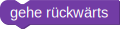

Sokoban
Programmiere den Roboter so, dass die Kiste auf die Markierung  geschoben wird.
geschoben wird.
Programmiere den Roboter so, dass die Kisten auf die Markierungen geschoben werden.
Die Zahl vor dem Roboter gibt an, in welcher Spalte die Kiste steht.
Die Zahlen vor dem Roboter geben die Koordinaten der Kiste an.
- Die erste Zahl ist die Zeile der Kiste
- Die zweite Zahl ist die Spalte der Kiste
Die Zahl vor dem Roboter gibt die Anzahl der Kisten vor.
Die weiteren Zahlen in der untersten Reihe geben die Zeilen an, in der sich jeweils eine Kiste befindet.
Die weiteren Zahlen in der untersten Reihe geben die Zeilen an, in der sich jeweils eine Kiste befindet.
Beachte den neuen Baustein 
Beachte: Dein Programm muss mit allen Testfällen zurechtkommen.